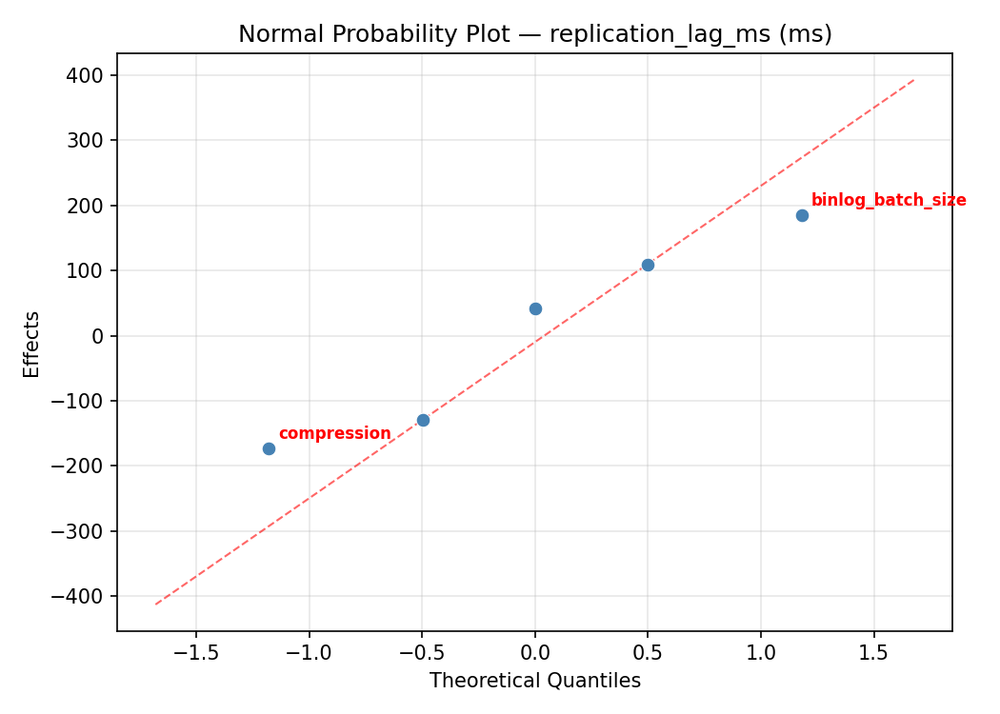
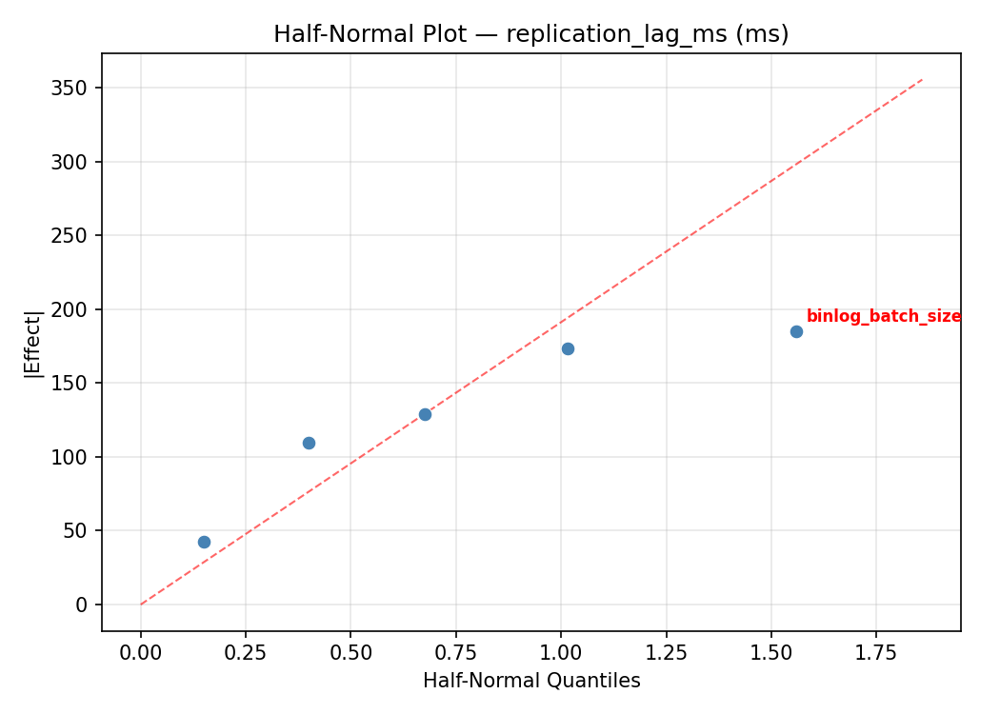
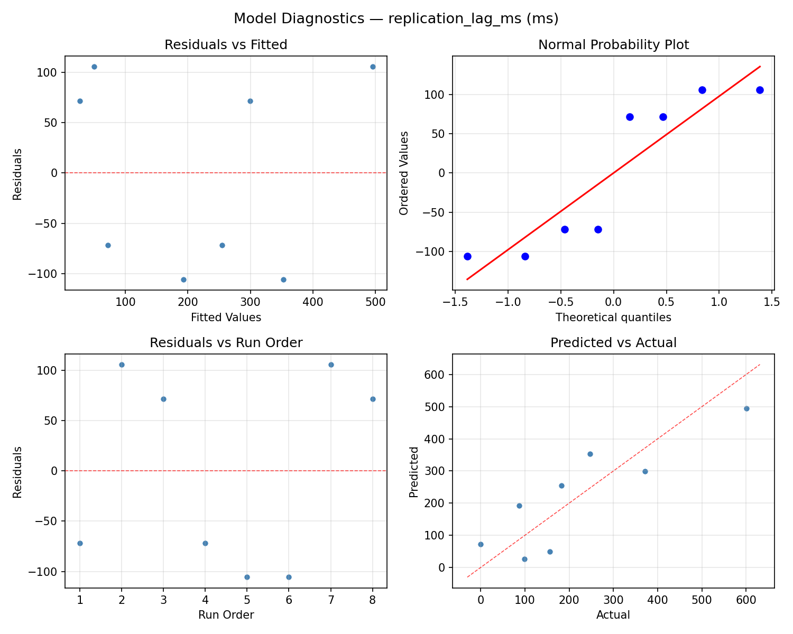
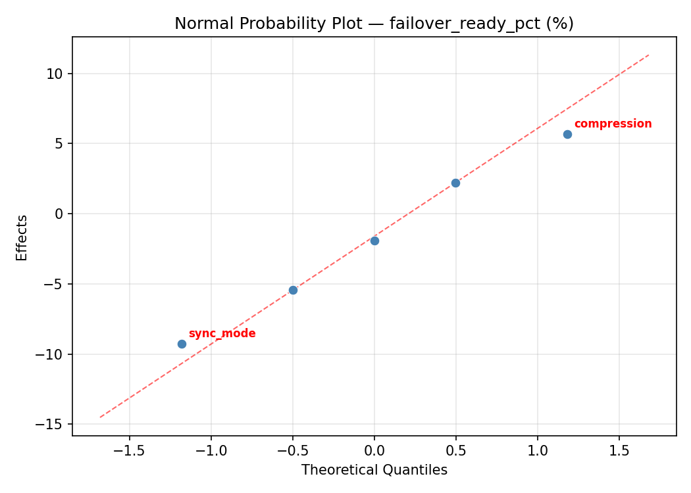
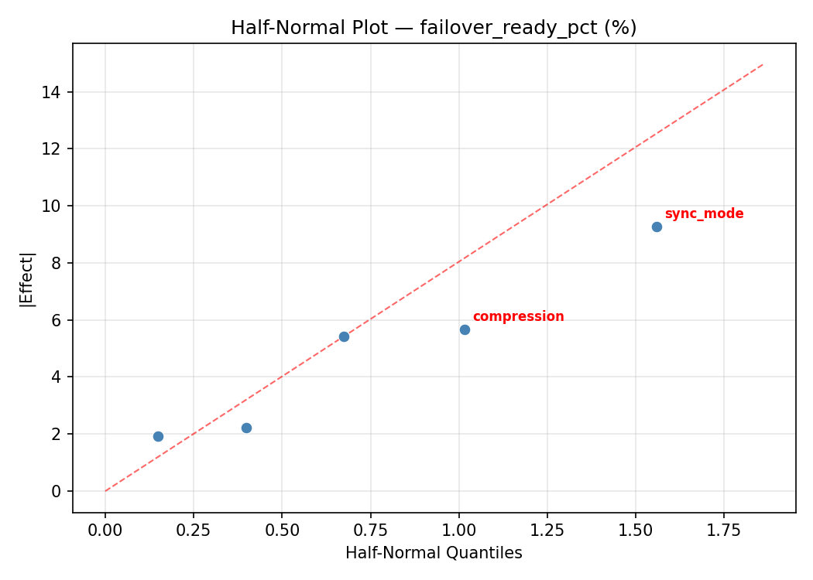
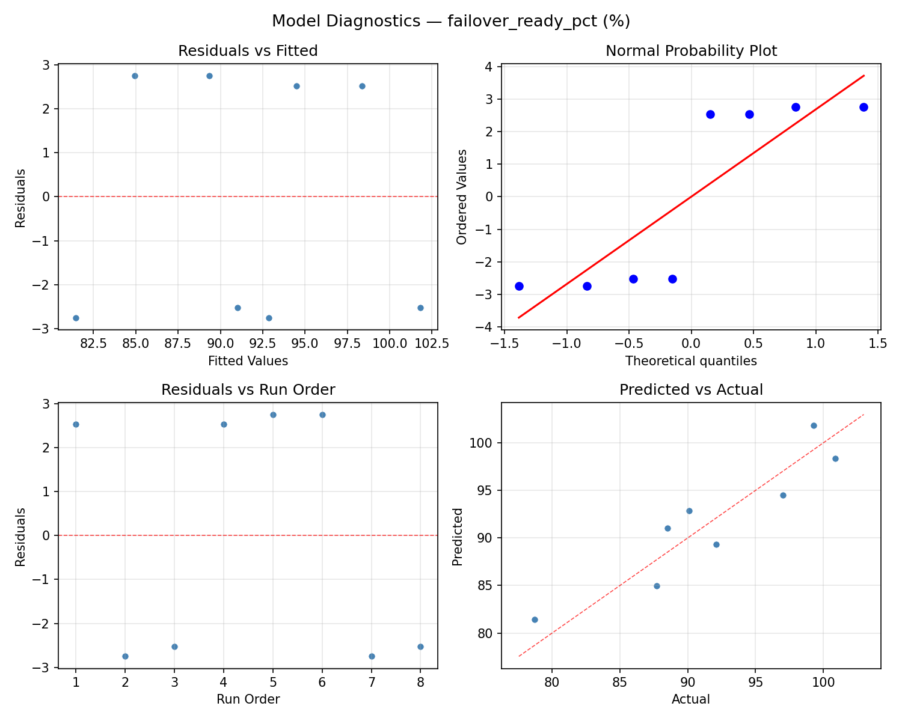

Summary
This experiment investigates data replication lag. Fractional factorial of 5 replication parameters for lag and failover readiness.
The design varies 5 factors: sync mode, ranging from async to semi_sync, binlog batch size (txns), ranging from 1 to 100, parallel workers (threads), ranging from 1 to 16, network buffer kb (KB), ranging from 64 to 1024, and compression, ranging from off to on. The goal is to optimize 2 responses: replication lag ms (ms) (minimize) and failover ready pct (%) (maximize). Fixed conditions held constant across all runs include engine = mysql_8, gtid = on.
A fractional factorial design reduces the number of runs from 32 to 8 by deliberately confounding higher-order interactions. This is ideal for screening — identifying which of the 5 factors matter most before investing in a full study.
Key Findings
For replication lag ms, the most influential factors were binlog batch size (49.0%), compression (18.2%), network buffer kb (15.8%). The best observed value was 0.0 (at sync mode = semi_sync, binlog batch size = 1, parallel workers = 16).
For failover ready pct, the most influential factors were binlog batch size (51.3%), network buffer kb (21.7%), compression (16.1%). The best observed value was 100.9 (at sync mode = semi_sync, binlog batch size = 1, parallel workers = 16).
Recommended Next Steps
- Follow up with a response surface design (CCD or Box-Behnken) on the top 3–4 factors to model curvature and find the true optimum.
- Consider whether any fixed factors should be varied in a future study.
- The screening results can guide factor reduction — drop factors contributing less than 5% and re-run with a smaller, more focused design.
Experimental Setup
Factors
| Factor | Low | High | Unit |
|---|
sync_mode | async | semi_sync | |
binlog_batch_size | 1 | 100 | txns |
parallel_workers | 1 | 16 | threads |
network_buffer_kb | 64 | 1024 | KB |
compression | off | on | |
Fixed: engine = mysql_8, gtid = on
Responses
| Response | Direction | Unit |
|---|
replication_lag_ms | ↓ minimize | ms |
failover_ready_pct | ↑ maximize | % |
Configuration
{
"metadata": {
"name": "Data Replication Lag",
"description": "Fractional factorial of 5 replication parameters for lag and failover readiness"
},
"factors": [
{
"name": "sync_mode",
"levels": [
"async",
"semi_sync"
],
"type": "categorical",
"unit": ""
},
{
"name": "binlog_batch_size",
"levels": [
"1",
"100"
],
"type": "continuous",
"unit": "txns"
},
{
"name": "parallel_workers",
"levels": [
"1",
"16"
],
"type": "continuous",
"unit": "threads"
},
{
"name": "network_buffer_kb",
"levels": [
"64",
"1024"
],
"type": "continuous",
"unit": "KB"
},
{
"name": "compression",
"levels": [
"off",
"on"
],
"type": "categorical",
"unit": ""
}
],
"fixed_factors": {
"engine": "mysql_8",
"gtid": "on"
},
"responses": [
{
"name": "replication_lag_ms",
"optimize": "minimize",
"unit": "ms"
},
{
"name": "failover_ready_pct",
"optimize": "maximize",
"unit": "%"
}
],
"settings": {
"operation": "fractional_factorial",
"test_script": "use_cases/44_data_replication_lag/sim.sh"
}
}
Experimental Matrix
The Fractional Factorial Design produces 8 runs. Each row is one experiment with specific factor settings.
| Run | sync_mode | binlog_batch_size | parallel_workers | network_buffer_kb | compression |
|---|
| 1 | async | 100 | 16 | 64 | off |
| 2 | semi_sync | 1 | 1 | 64 | off |
| 3 | semi_sync | 100 | 1 | 1024 | off |
| 4 | semi_sync | 100 | 16 | 1024 | on |
| 5 | async | 100 | 1 | 64 | on |
| 6 | semi_sync | 1 | 16 | 64 | on |
| 7 | async | 1 | 1 | 1024 | on |
| 8 | async | 1 | 16 | 1024 | off |
Step-by-Step Workflow
1
Preview the design
$ python doe.py info --config use_cases/44_data_replication_lag/config.json
2
Generate the runner script
$ python doe.py generate --config use_cases/44_data_replication_lag/config.json \
--output use_cases/44_data_replication_lag/results/run.sh --seed 42
3
Execute the experiments
$ bash use_cases/44_data_replication_lag/results/run.sh
4
Analyze results
$ python doe.py analyze --config use_cases/44_data_replication_lag/config.json
5
Get optimization recommendations
$ python doe.py optimize --config use_cases/44_data_replication_lag/config.json
6
Multi-objective optimization
With 2 competing responses, use --multi to find the best compromise via Derringer–Suich desirability.
$ python doe.py optimize --config use_cases/44_data_replication_lag/config.json --multi
7
Generate the HTML report
$ python doe.py report --config use_cases/44_data_replication_lag/config.json \
--output use_cases/44_data_replication_lag/results/report.html
Features Exercised
| Feature | Value |
|---|
| Design type | fractional_factorial |
| Factor types | continuous (3), categorical (2) |
| Arg style | double-dash |
| Responses | 2 (replication_lag_ms ↓, failover_ready_pct ↑) |
| Total runs | 8 |
Analysis Results
Generated from actual experiment runs using the DOE Helper Tool.
Response: replication_lag_ms
Top factors: binlog_batch_size (49.0%), compression (18.2%), network_buffer_kb (15.8%).
ANOVA
| Source | DF | SS | MS | F | p-value |
|---|
| Source | DF | SS | MS | F | p-value |
| sync_mode | 1 | 12640.5000 | 12640.5000 | 0.667 | 0.4513 |
| binlog_batch_size | 1 | 126504.5000 | 126504.5000 | 6.672 | 0.0493 |
| parallel_workers | 1 | 128.0000 | 128.0000 | 0.007 | 0.9377 |
| network_buffer_kb | 1 | 13122.0000 | 13122.0000 | 0.692 | 0.4434 |
| compression | 1 | 17484.5000 | 17484.5000 | 0.922 | 0.3810 |
| sync_mode*binlog_batch_size | 1 | 13122.0000 | 13122.0000 | 0.692 | 0.4434 |
| sync_mode*parallel_workers | 1 | 17484.5000 | 17484.5000 | 0.922 | 0.3810 |
| sync_mode*network_buffer_kb | 1 | 126504.5000 | 126504.5000 | 6.672 | 0.0493 |
| sync_mode*compression | 1 | 128.0000 | 128.0000 | 0.007 | 0.9377 |
| binlog_batch_size*parallel_workers | 1 | 12012.5000 | 12012.5000 | 0.634 | 0.4622 |
| binlog_batch_size*network_buffer_kb | 1 | 12640.5000 | 12640.5000 | 0.667 | 0.4513 |
| binlog_batch_size*compression | 1 | 72962.0000 | 72962.0000 | 3.848 | 0.1071 |
| parallel_workers*network_buffer_kb | 1 | 72962.0000 | 72962.0000 | 3.848 | 0.1071 |
| parallel_workers*compression | 1 | 12640.5000 | 12640.5000 | 0.667 | 0.4513 |
| network_buffer_kb*compression | 1 | 12012.5000 | 12012.5000 | 0.634 | 0.4622 |
| Error | (Lenth | PSE) | 5 | 94803.7500 | 18960.7500 |
| Total | 7 | 254854.0000 | 36407.7143 | | |
Pareto Chart

Main Effects Plot

Normal Probability Plot of Effects

Half-Normal Plot of Effects

Model Diagnostics

Response: failover_ready_pct
Top factors: binlog_batch_size (51.3%), network_buffer_kb (21.7%), compression (16.1%).
ANOVA
| Source | DF | SS | MS | F | p-value |
|---|
| Source | DF | SS | MS | F | p-value |
| sync_mode | 1 | 4.0612 | 4.0612 | 0.406 | 0.5518 |
| binlog_batch_size | 1 | 245.3113 | 245.3113 | 24.551 | 0.0043 |
| parallel_workers | 1 | 1.7112 | 1.7112 | 0.171 | 0.6961 |
| network_buffer_kb | 1 | 43.7112 | 43.7112 | 4.375 | 0.0907 |
| compression | 1 | 24.1513 | 24.1513 | 2.417 | 0.1807 |
| sync_mode*binlog_batch_size | 1 | 43.7112 | 43.7112 | 4.375 | 0.0907 |
| sync_mode*parallel_workers | 1 | 24.1512 | 24.1512 | 2.417 | 0.1807 |
| sync_mode*network_buffer_kb | 1 | 245.3112 | 245.3112 | 24.551 | 0.0043 |
| sync_mode*compression | 1 | 1.7112 | 1.7112 | 0.171 | 0.6961 |
| binlog_batch_size*parallel_workers | 1 | 42.7812 | 42.7812 | 4.282 | 0.0933 |
| binlog_batch_size*network_buffer_kb | 1 | 4.0612 | 4.0612 | 0.406 | 0.5518 |
| binlog_batch_size*compression | 1 | 6.6612 | 6.6612 | 0.667 | 0.4513 |
| parallel_workers*network_buffer_kb | 1 | 6.6613 | 6.6613 | 0.667 | 0.4513 |
| parallel_workers*compression | 1 | 4.0612 | 4.0612 | 0.406 | 0.5518 |
| network_buffer_kb*compression | 1 | 42.7812 | 42.7812 | 4.282 | 0.0933 |
| Error | (Lenth | PSE) | 5 | 49.9594 | 9.9919 |
| Total | 7 | 368.3888 | 52.6270 | | |
Pareto Chart

Main Effects Plot

Normal Probability Plot of Effects

Half-Normal Plot of Effects

Model Diagnostics

Response Surface Plots
3D surfaces fitted with quadratic RSM. Red dots are observed data points.
failover ready pct binlog batch size vs network buffer kb

failover ready pct binlog batch size vs parallel workers

failover ready pct parallel workers vs network buffer kb

replication lag ms binlog batch size vs network buffer kb

replication lag ms binlog batch size vs parallel workers

replication lag ms parallel workers vs network buffer kb

Multi-Objective Optimization
When responses compete, Derringer–Suich desirability finds the best compromise.
Each response is scaled to a 0–1 desirability, then combined via a weighted geometric mean.
Overall Desirability
D = 0.9545
Per-Response Desirability
| Response | Weight | Desirability | Predicted | Dir |
|---|
replication_lag_ms |
1.0 |
|
0.00 0.9545 0.00 ms |
↓ |
failover_ready_pct |
1.5 |
|
100.90 0.9545 100.90 % |
↑ |
Recommended Settings
| Factor | Value |
|---|
sync_mode | async |
binlog_batch_size | 100 txns |
parallel_workers | 16 threads |
network_buffer_kb | 64 KB |
compression | off |
Source: from observed run #1
Trade-off Summary
Sacrifice = how much worse than single-objective best.
| Response | Predicted | Best Observed | Sacrifice |
|---|
failover_ready_pct | 100.90 | 100.90 | +0.00 |
Top 3 Runs by Desirability
| Run | D | Factor Settings |
|---|
| #8 | 0.8543 | sync_mode=semi_sync, binlog_batch_size=100, parallel_workers=1, network_buffer_kb=1024, compression=off |
| #4 | 0.7457 | sync_mode=semi_sync, binlog_batch_size=100, parallel_workers=16, network_buffer_kb=1024, compression=on |
Model Quality
| Response | R² | Type |
|---|
failover_ready_pct | 0.7414 | linear |
Full Multi-Objective Output
============================================================
MULTI-OBJECTIVE OPTIMIZATION
Method: Derringer-Suich Desirability Function
============================================================
Overall desirability: D = 0.9545
Response Weight Desirability Predicted Direction
---------------------------------------------------------------------
replication_lag_ms 1.0 0.9545 0.00 ms ↓
failover_ready_pct 1.5 0.9545 100.90 % ↑
Recommended settings:
sync_mode = async
binlog_batch_size = 100 txns
parallel_workers = 16 threads
network_buffer_kb = 64 KB
compression = off
(from observed run #1)
Trade-off summary:
replication_lag_ms: 0.00 (best observed: 0.00, sacrifice: +0.00)
failover_ready_pct: 100.90 (best observed: 100.90, sacrifice: +0.00)
Model quality:
replication_lag_ms: R² = 0.6482 (linear)
failover_ready_pct: R² = 0.7414 (linear)
Top 3 observed runs by overall desirability:
1. Run #1 (D=0.9545): sync_mode=async, binlog_batch_size=100, parallel_workers=16, network_buffer_kb=64, compression=off
2. Run #8 (D=0.8543): sync_mode=semi_sync, binlog_batch_size=100, parallel_workers=1, network_buffer_kb=1024, compression=off
3. Run #4 (D=0.7457): sync_mode=semi_sync, binlog_batch_size=100, parallel_workers=16, network_buffer_kb=1024, compression=on
Full Analysis Output
=== Main Effects: replication_lag_ms ===
Factor Effect Std Error % Contribution
--------------------------------------------------------------
binlog_batch_size -251.5000 67.4608 49.0%
compression -93.5000 67.4608 18.2%
network_buffer_kb -81.0000 67.4608 15.8%
sync_mode -79.5000 67.4608 15.5%
parallel_workers -8.0000 67.4608 1.6%
=== ANOVA Table: replication_lag_ms ===
Source DF SS MS F p-value
-----------------------------------------------------------------------------
sync_mode 1 12640.5000 12640.5000 0.667 0.4513
binlog_batch_size 1 126504.5000 126504.5000 6.672 0.0493
parallel_workers 1 128.0000 128.0000 0.007 0.9377
network_buffer_kb 1 13122.0000 13122.0000 0.692 0.4434
compression 1 17484.5000 17484.5000 0.922 0.3810
sync_mode*binlog_batch_size 1 13122.0000 13122.0000 0.692 0.4434
sync_mode*parallel_workers 1 17484.5000 17484.5000 0.922 0.3810
sync_mode*network_buffer_kb 1 126504.5000 126504.5000 6.672 0.0493
sync_mode*compression 1 128.0000 128.0000 0.007 0.9377
binlog_batch_size*parallel_workers 1 12012.5000 12012.5000 0.634 0.4622
binlog_batch_size*network_buffer_kb 1 12640.5000 12640.5000 0.667 0.4513
binlog_batch_size*compression 1 72962.0000 72962.0000 3.848 0.1071
parallel_workers*network_buffer_kb 1 72962.0000 72962.0000 3.848 0.1071
parallel_workers*compression 1 12640.5000 12640.5000 0.667 0.4513
network_buffer_kb*compression 1 12012.5000 12012.5000 0.634 0.4622
Error (Lenth PSE) 5 94803.7500 18960.7500
Total 7 254854.0000 36407.7143
Note: Error estimated using Lenth's pseudo-standard-error (unreplicated design)
=== Interaction Effects: replication_lag_ms ===
Factor A Factor B Interaction % Contribution
------------------------------------------------------------------------
sync_mode network_buffer_kb 251.5000 22.3%
binlog_batch_size compression 191.0000 16.9%
parallel_workers network_buffer_kb -191.0000 16.9%
sync_mode parallel_workers -93.5000 8.3%
sync_mode binlog_batch_size 81.0000 7.2%
binlog_batch_size network_buffer_kb 79.5000 7.0%
parallel_workers compression -79.5000 7.0%
binlog_batch_size parallel_workers -77.5000 6.9%
network_buffer_kb compression 77.5000 6.9%
sync_mode compression -8.0000 0.7%
=== Summary Statistics: replication_lag_ms ===
sync_mode:
Level N Mean Std Min Max
------------------------------------------------------------
async 4 257.7500 251.6338 0.0000 601.0000
semi_sync 4 178.2500 131.9782 87.0000 371.0000
binlog_batch_size:
Level N Mean Std Min Max
------------------------------------------------------------
1 4 343.7500 192.8132 156.0000 601.0000
100 4 92.2500 74.8749 0.0000 183.0000
parallel_workers:
Level N Mean Std Min Max
------------------------------------------------------------
1 4 222.0000 119.1246 87.0000 371.0000
16 4 214.0000 265.9286 0.0000 601.0000
network_buffer_kb:
Level N Mean Std Min Max
------------------------------------------------------------
1024 4 258.5000 239.6463 87.0000 601.0000
64 4 177.5000 152.1414 0.0000 371.0000
compression:
Level N Mean Std Min Max
------------------------------------------------------------
off 4 264.7500 274.4939 0.0000 601.0000
on 4 171.2500 61.4512 99.0000 247.0000
=== Main Effects: failover_ready_pct ===
Factor Effect Std Error % Contribution
--------------------------------------------------------------
binlog_batch_size 11.0750 2.5648 51.3%
network_buffer_kb 4.6750 2.5648 21.7%
compression 3.4750 2.5648 16.1%
sync_mode 1.4250 2.5648 6.6%
parallel_workers 0.9250 2.5648 4.3%
=== ANOVA Table: failover_ready_pct ===
Source DF SS MS F p-value
-----------------------------------------------------------------------------
sync_mode 1 4.0612 4.0612 0.406 0.5518
binlog_batch_size 1 245.3113 245.3113 24.551 0.0043
parallel_workers 1 1.7112 1.7112 0.171 0.6961
network_buffer_kb 1 43.7112 43.7112 4.375 0.0907
compression 1 24.1513 24.1513 2.417 0.1807
sync_mode*binlog_batch_size 1 43.7112 43.7112 4.375 0.0907
sync_mode*parallel_workers 1 24.1512 24.1512 2.417 0.1807
sync_mode*network_buffer_kb 1 245.3112 245.3112 24.551 0.0043
sync_mode*compression 1 1.7112 1.7112 0.171 0.6961
binlog_batch_size*parallel_workers 1 42.7812 42.7812 4.282 0.0933
binlog_batch_size*network_buffer_kb 1 4.0612 4.0612 0.406 0.5518
binlog_batch_size*compression 1 6.6612 6.6612 0.667 0.4513
parallel_workers*network_buffer_kb 1 6.6613 6.6613 0.667 0.4513
parallel_workers*compression 1 4.0612 4.0612 0.406 0.5518
network_buffer_kb*compression 1 42.7812 42.7812 4.282 0.0933
Error (Lenth PSE) 5 49.9594 9.9919
Total 7 368.3888 52.6270
Note: Error estimated using Lenth's pseudo-standard-error (unreplicated design)
=== Interaction Effects: failover_ready_pct ===
Factor A Factor B Interaction % Contribution
------------------------------------------------------------------------
sync_mode network_buffer_kb -11.0750 30.8%
sync_mode binlog_batch_size -4.6750 13.0%
binlog_batch_size parallel_workers 4.6250 12.9%
network_buffer_kb compression -4.6250 12.9%
sync_mode parallel_workers 3.4750 9.7%
binlog_batch_size compression -1.8250 5.1%
parallel_workers network_buffer_kb 1.8250 5.1%
binlog_batch_size network_buffer_kb -1.4250 4.0%
parallel_workers compression 1.4250 4.0%
sync_mode compression 0.9250 2.6%
=== Summary Statistics: failover_ready_pct ===
sync_mode:
Level N Mean Std Min Max
------------------------------------------------------------
async 4 91.0750 9.9359 78.7000 100.9000
semi_sync 4 92.5000 4.7666 88.5000 99.3000
binlog_batch_size:
Level N Mean Std Min Max
------------------------------------------------------------
1 4 86.2500 5.1313 78.7000 90.1000
100 4 97.3250 3.8335 92.1000 100.9000
parallel_workers:
Level N Mean Std Min Max
------------------------------------------------------------
1 4 91.3250 4.2398 87.7000 97.0000
16 4 92.2500 10.2103 78.7000 100.9000
network_buffer_kb:
Level N Mean Std Min Max
------------------------------------------------------------
1024 4 89.4500 8.6153 78.7000 99.3000
64 4 94.1250 5.8312 88.5000 100.9000
compression:
Level N Mean Std Min Max
------------------------------------------------------------
off 4 90.0500 9.1860 78.7000 100.9000
on 4 93.5250 5.5102 87.7000 99.3000
Optimization Recommendations
=== Optimization: replication_lag_ms ===
Direction: minimize
Best observed run: #1
sync_mode = semi_sync
binlog_batch_size = 1
parallel_workers = 16
network_buffer_kb = 64
compression = on
Value: 0.0
RSM Model (linear, R² = 0.2316, Adj R² = -1.6892):
Coefficients:
intercept +218.0000
sync_mode +46.7500
binlog_batch_size -33.0000
parallel_workers -61.5000
network_buffer_kb -2.7500
compression -17.7500
Predicted optimum (from linear model, at observed points):
sync_mode = semi_sync
binlog_batch_size = 1
parallel_workers = 1
network_buffer_kb = 64
compression = off
Predicted value: 379.7500
Surface optimum (via L-BFGS-B, linear model):
sync_mode = async
binlog_batch_size = 100
parallel_workers = 16
network_buffer_kb = 1024
compression = on
Predicted value: 56.2500
Model quality: Weak fit — consider adding center points or using a different design.
Factor importance:
1. parallel_workers (effect: -123.0, contribution: 38.0%)
2. sync_mode (effect: 93.5, contribution: 28.9%)
3. binlog_batch_size (effect: -66.0, contribution: 20.4%)
4. compression (effect: -35.5, contribution: 11.0%)
5. network_buffer_kb (effect: 5.5, contribution: 1.7%)
=== Optimization: failover_ready_pct ===
Direction: maximize
Best observed run: #1
sync_mode = semi_sync
binlog_batch_size = 1
parallel_workers = 16
network_buffer_kb = 64
compression = on
Value: 100.9
RSM Model (linear, R² = 0.5483, Adj R² = -0.5811):
Coefficients:
intercept +91.7875
sync_mode -1.7375
binlog_batch_size +2.4375
parallel_workers +2.9125
network_buffer_kb -2.1875
compression +1.7375
Predicted optimum (from linear model, at observed points):
sync_mode = async
binlog_batch_size = 100
parallel_workers = 16
network_buffer_kb = 64
compression = off
Predicted value: 99.3250
Surface optimum (via L-BFGS-B, linear model):
sync_mode = async
binlog_batch_size = 100
parallel_workers = 16
network_buffer_kb = 64
compression = on
Predicted value: 102.8000
Model quality: Moderate fit — use predictions directionally, not precisely.
Factor importance:
1. parallel_workers (effect: 5.8, contribution: 26.4%)
2. binlog_batch_size (effect: 4.9, contribution: 22.1%)
3. network_buffer_kb (effect: 4.4, contribution: 19.9%)
4. sync_mode (effect: -3.5, contribution: 15.8%)
5. compression (effect: 3.5, contribution: 15.8%)